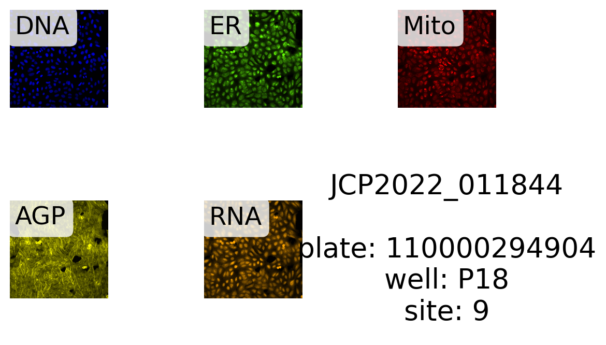
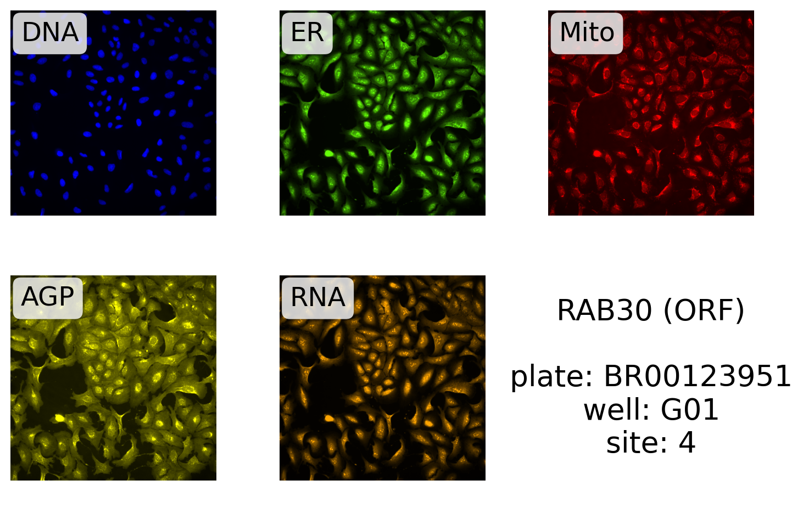
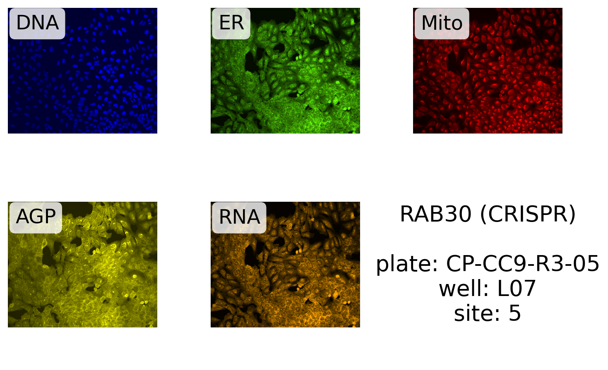

Code
import matplotlib.colors as mpl # noqa: CPY001
import numpy as np
import polars as pl
from jump_portrait.fetch import get_item_location_info, get_jump_image
from matplotlib import pyplot as pltThis notebook demonstrates how to retrieve and plot all channels for one site using jump_portrait.
import matplotlib.colors as mpl # noqa: CPY001
import numpy as np
import polars as pl
from jump_portrait.fetch import get_item_location_info, get_jump_image
from matplotlib import pyplot as pltFirst, we need to get location information telling us where all images corresponding to a specific perturbation can be found. We will use the “get_item_location” function from jump_portrait for this.
Here we retrieve image locations for the “RAB30” gene:
gene_info = get_item_location_info("RAB30")
gene_info.shape(90, 28)There are 90 images: 9 sites/well X 5 replicate wells X 2 data types (CRISPR & ORF).
We can also retrieve locations for compound data. By default, the function assumes a query by INCHI key. We can also query by JCP ID by specifying the query column:
cmpd_info_byinchi = get_item_location_info("CLETVKMYAXARPO-UHFFFAOYSA-N")
cmpd_info_byjcp = get_item_location_info("JCP2022_011844", input_column="JCP2022")
print(cmpd_info_byinchi.shape)
print(cmpd_info_byjcp.shape)(34, 28)
(34, 28)There are 34 sites corresponding to this compound.
We’ve written a function to display all channels for a specific image. Note that this is just one possible way to display images - we’ve included the function here so that you can modify it to suit your own needs.
def display_site(source: str, batch: str, plate: str, well: str, site: str, label: str, int_percentile: float) -> None:
"""Plot all channels from one image.
Parameters
----------
source : String
Source ID for image of interest.
batch : String
Batch ID for image of interest.
plate : String
Plate ID for image of interest.
well : String
Well ID for image of interest.
site : String
Site ID for image of interest.
label : String
Label to display in lower left corner.
int_percentile: float
Rescale the image from 0 - this percentile of intensity values.
"""
channels = ["DNA", "ER", "Mito", "AGP", "RNA"]
n_rows = 2
n_cols = 3
# Make images
axes = plt.subplots(n_rows, n_cols, figsize=(6 * n_cols, 6 * n_rows))[1]
axes = axes.ravel()
counter = 0
for channel in channels:
if channel == "ER":
cmap = mpl.LinearSegmentedColormap.from_list("green_cmap", ["#000", "#65fe08"])
elif channel == "DNA":
cmap = mpl.LinearSegmentedColormap.from_list("green_cmap", ["#000", "#0000FF"])
elif channel == "Mito":
cmap = mpl.LinearSegmentedColormap.from_list("green_cmap", ["#000", "#FF0000"])
elif channel == "AGP":
cmap = mpl.LinearSegmentedColormap.from_list("green_cmap", ["#000", "#FFFF00"])
elif channel == "RNA":
cmap = mpl.LinearSegmentedColormap.from_list("green_cmap", ["#000", "#FFA500"])
else:
cmap = "gray"
img = get_jump_image(source, batch, plate, well, channel, site, None)
ax = axes[counter]
ax.imshow(img, vmin=0, vmax=np.percentile(img, int_percentile), cmap=cmap)
ax.axis("off")
# Add channel name label in the top left corner
ax.text(
0.05, 0.95, channel,
horizontalalignment='left',
verticalalignment='top',
fontsize=18,
color='black',
bbox=dict(facecolor='white', alpha=0.8, edgecolor='none', boxstyle='round,pad=0.3'),
transform=ax.transAxes
)
counter += 1
# put label in last subplot
ax = axes[counter]
ax.text(
0.5,
0.5,
label,
horizontalalignment="center",
verticalalignment="center",
fontsize=20,
color="black",
transform=ax.transAxes,
)
ax.axis("off")
# show plot
plt.tight_layout()
plt.show()We can get the required location parameters from the location info that we retrieved earlier. Here we get parameters for the first site in the JCP compound results:
source, batch, plate, well, site, *rest = cmpd_info_byjcp.row(0)Next, we define the label and make the plot:
label = f"JCP2022_011844\n\nplate: {plate}\nwell: {well}\nsite: {site}"
display_site(source, batch, plate, well, site, label, 99.5)
Here, we plot one of the RAB30 ORF images:
source, batch, plate, well, site, *rest = gene_info.filter(pl.col("Metadata_PlateType") == "ORF").row(0)
label = f"RAB30 (ORF)\n\nplate: {plate}\nwell: {well}\nsite: {site}"
display_site(source, batch, plate, well, site, label, 99.5)
And for CRISPR:
source, batch, plate, well, site, *rest = gene_info.filter(pl.col("Metadata_PlateType") == "CRISPR").row(0)
label = f"RAB30 (CRISPR)\n\nplate: {plate}\nwell: {well}\nsite: {site}"
display_site(source, batch, plate, well, site, label, 99.5)